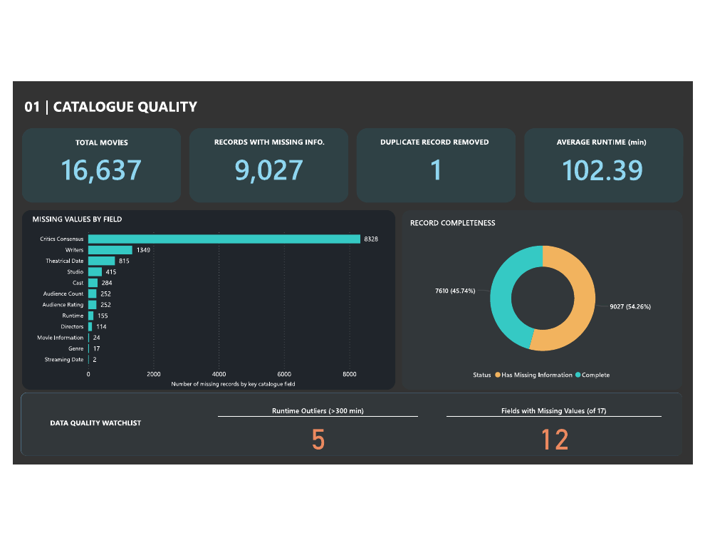

PAGE 01
Catalogue Quality
Tracks total records, records with missing information, duplicate removal and runtime. Highlights missing values by field, record completeness, runtime outliers and fields with missing values.

DATA QUALITY / MEDIA & CONTENT INTELLIGENCE
A data-quality and catalogue analysis project examining metadata completeness, missing information, and content patterns across a movie catalogue.

The objective was to assess the quality and completeness of a movie catalogue, identify missing metadata, and explore content-level patterns that could support better catalogue understanding.
The Power BI report is organised into three pages: Catalogue Quality, Content Intelligence, and Release & Ratings.
The report moves from metadata quality to catalogue content patterns and release/rating analysis.
Tracks total records, records with missing information, duplicate removal and runtime. Highlights missing values by field, record completeness, runtime outliers and fields with missing values.
Explores catalogue composition and content patterns, including genre distribution and the characteristics of titles represented in the dataset.
Full page available in the Power BI report / project files.
Examines release timing and rating patterns across the catalogue, including decade-level trends and critics-versus-audience ratings.
Full page available in the Power BI report / project files.
Excel, Python and SQL Server supported data profiling, cleaning, deduplication and analysis before the results were presented in Power BI. The project reviewed missing values across fields, record completeness, runtime outliers, genre patterns, release decades and ratings.
7,610 records were complete; 9,027 records contained missing information.
Critics Consensus was the most frequently missing field in the quality review.
Drama was the largest genre represented; the 2010s were the largest release decade.
Average critics and audience ratings were nearly equal (60.46 and 60.47 respectively).
Tools: Microsoft Excel, Python, SQL Server, Microsoft Power BI.
Dataset: Maven Analytics movie catalogue dataset.
Scope: A portfolio project focused on data quality, catalogue understanding and descriptive analysis—not a recommendation engine or predictive model.
VIEW ALL PROJECT FILES ↗